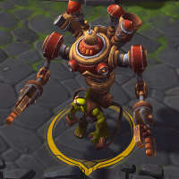
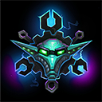
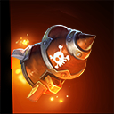
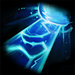
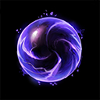
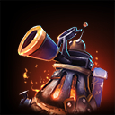

Gazlowe
Welcome to our Gazlowe guide for Heroes of the Storm. Here you will learn everything you need to know in order to play Gazlowe in a competitive environment, whether you play on your own or with a team.
Lazor Build
| Level 1 | Level 4 | Level 7 | Level 10 | Level 13 | Level 16 | Level 20 |
|---|---|---|---|---|---|---|
|  |  |  |  |  |
The Lazor Build revolves around improving Deth Lazor Icon Deth Lazor. Key Talents include Break it Down! Icon Break it Down!, which allows the building of massive cooldown reduction for repeated Deth Lazor uses, Hyperfocus Coils Icon Hyperfocus Coils, which greatly improves the usability of Deth Lazor by cutting its channeling time, EZ-PZ Dimensional Ripper Icon EZ-PZ Dimensional Ripper, which provides a strong and reliable movement speed reduction effect, and Firin' Mah Lazorz Icon Firin' Mah Lazorz, to multiply Deth Lazorz's damage potential. Both Robo-Goblin Icon Robo-Goblin and Grav-O-Bomb 3000 Icon Grav-O-Bomb 3000 make for appropriate Heroic Ability choices, depending on the situation at hand.
Go Back